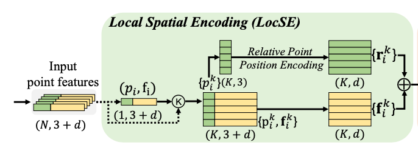

Abstract: Notes for Architecture and building blocks for the RandLA which is implemented in the experiment
Local feature aggregation 1.Local Spatial encoding (LocSE)  –> 3+d: xyz position + other per-point features (e.g. RGB or other intermediate learned features)
Objective
**Encode xyz coordinates of all neighbouring points for each point to aware of relative spatial locations.**
Steps:
1. Finding neighbouring points
for $ith$ point, gather neighbouring points by $KNN$ for efficiency, based on Euclidean distances.
2. Relative Point Position encoding
concatenate the xyz positions of ith points, neighbour k of ith points, element-wise subtraction, Euclidean distance of two points
3. Point Feature Augmentation
Concatenate relative point position with corresponding point features f.
2.Attentive pooling Objective Aggregate the set of neighbouring point features f, use attention mechanism to automatically learn important local features. Steps: 1.Computing Attention Scores 2.Weighted Summation 3.dilated residual block